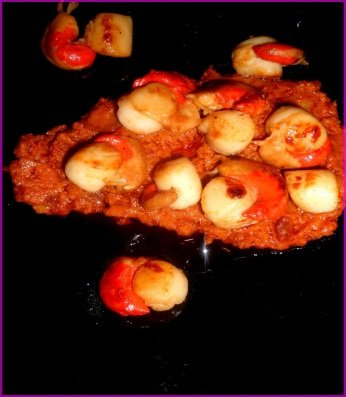

Saint-Jacques au chorizo
Ingredients
2×
- crème fraîche
- quelques tranches de chorizo
- 10 noix de Saint-Jacques

Préparation
Étape 1
Chauffer de la crème fraîche dans une casserole. Couper quelques tranches de chorizo en lamelles et les laisser infuser dans la crème.
Étape 2
Saisir 10 noix de Saint-Jacques environ 1min de chaque côté. Servir nappées de crème au chorizo.